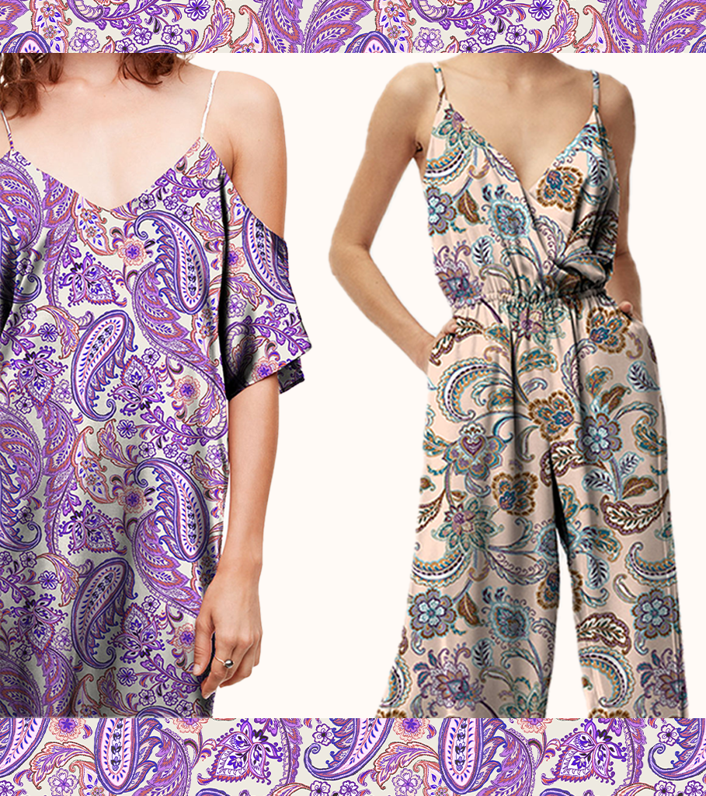
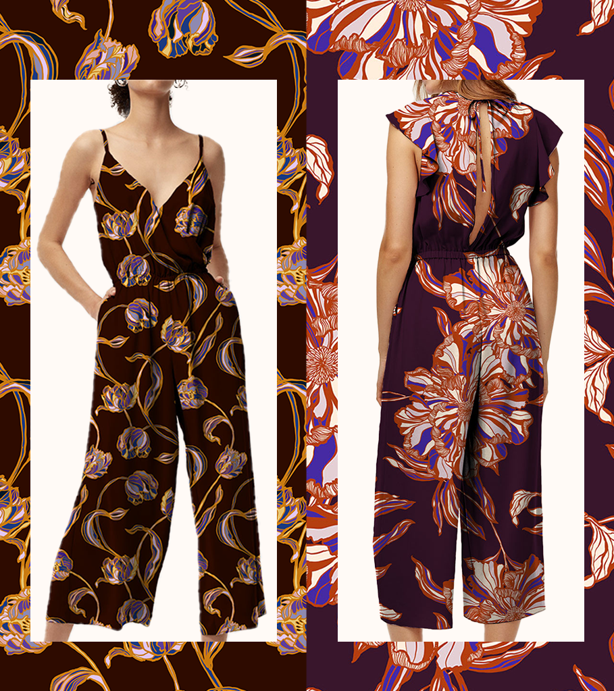
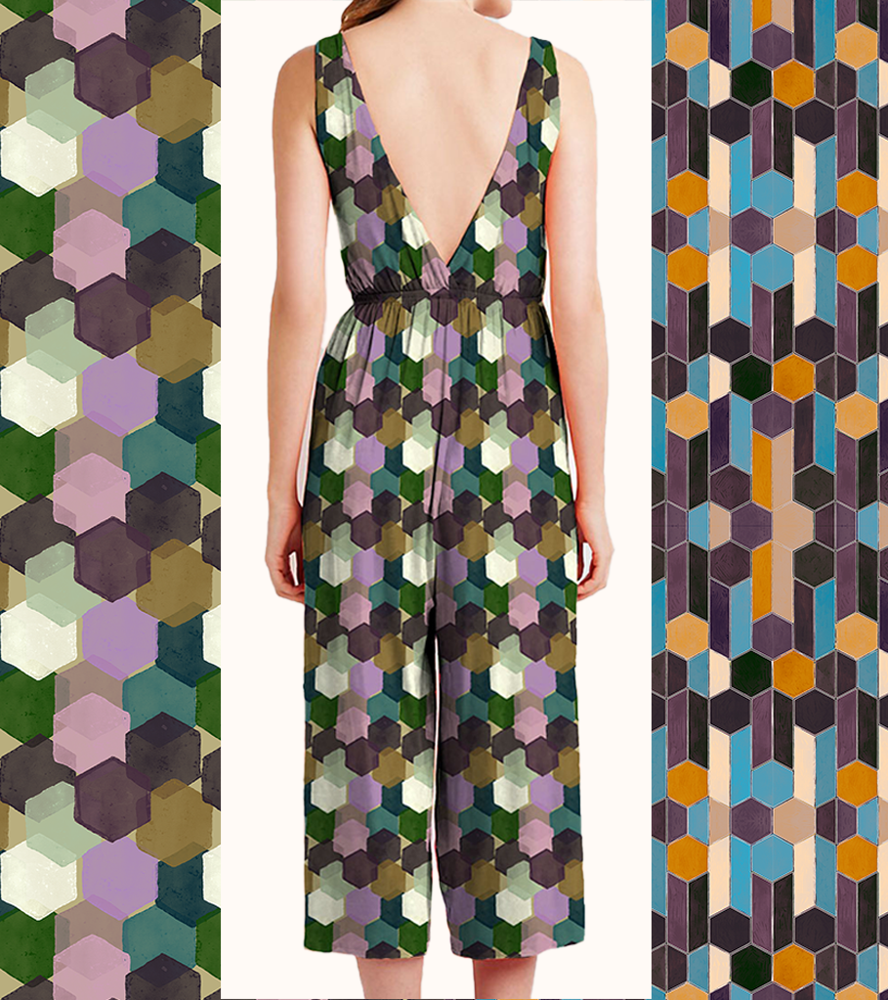
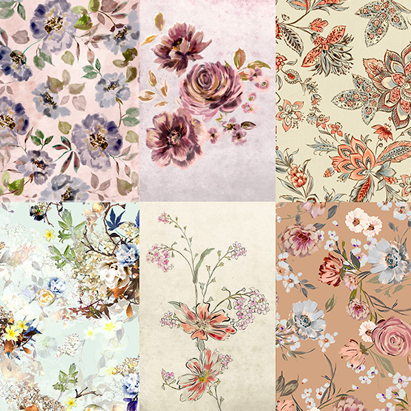
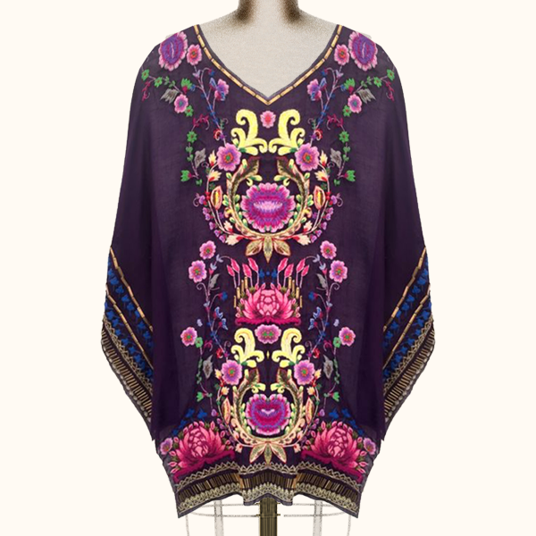
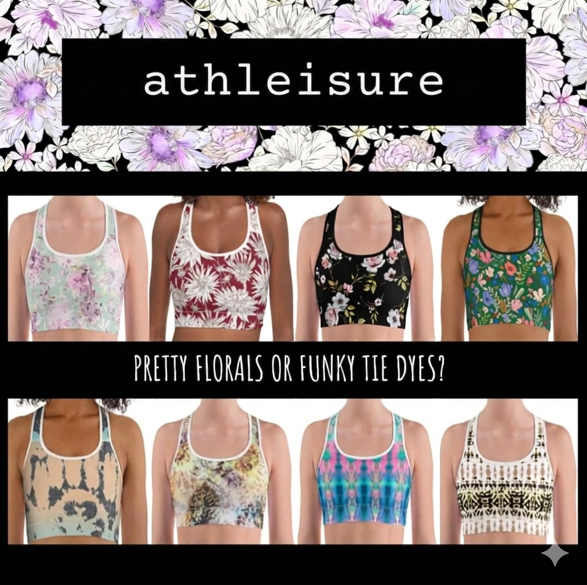
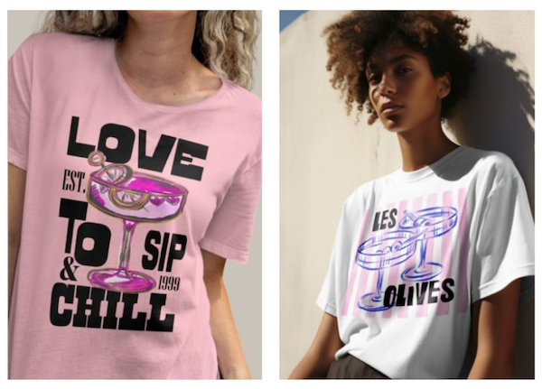
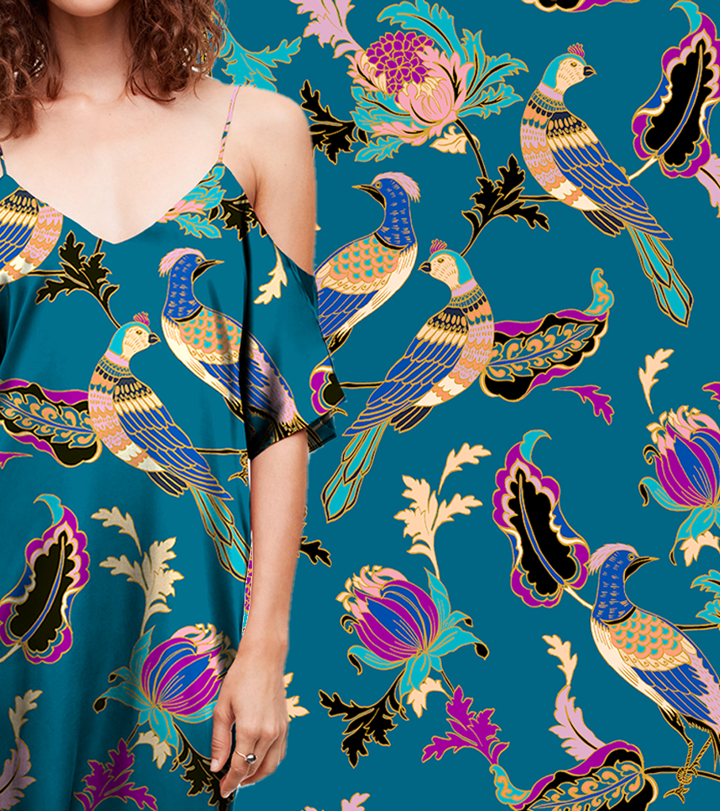
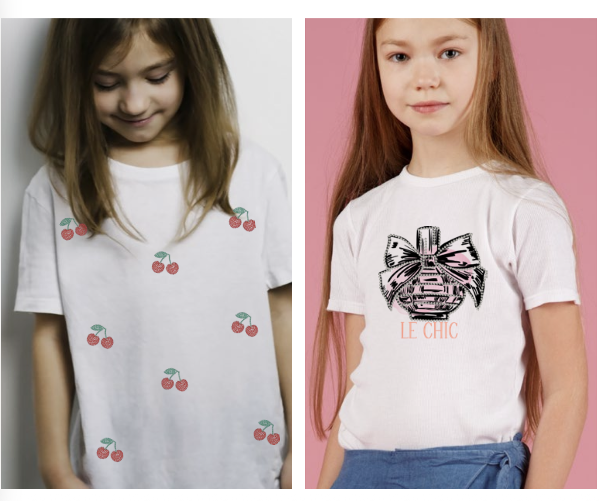

Senior print and embroidery design shaped by studio craft and commercial clarity.
Senior Print & Embroidery Designer with extensive experience across fashion textiles, placement graphics, all-over print, embroidery, CAD development and international studio leadership. Strong across trend research, commercial range building, buyer-facing presentations, factory liaison, strike-off management and mentoring junior designers.


Painted floral directions
Motif-led layouts and colour stories that could sit naturally in premium womenswear collections.

Placement and border studies
Graphic and embroidery-led ideas for statement placements, trims and more crafted surface stories.

Repeat and palette refinement
Colour balance, repeat scale and print cleanup for more polished collection development.

Prints
Painterly florals, decorative repeats and more elevated print collections.

Embroideries
Placement and motif-driven embroidery with a stronger luxury and craft sensibility.

Interiors
Print and artwork translated into more atmospheric, lifestyle-led interior settings.

athleisure
Application-led print development showing versatility across broader fashion categories.

Graphics
Placement graphics and motifs developed with clarity, style and commercial polish.

Conversational
Illustrative and narrative surface design with personality, charm and repeat potential.

Kids
Playful print and graphic work with warmth, clarity and strong seasonal storytelling.
About
Background, contact details and a fuller introduction to Cat’s studio practice.